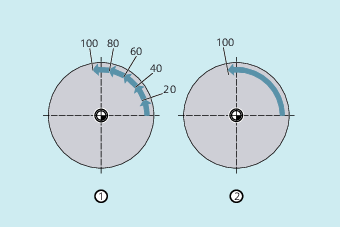

If single axes are defined as punching/nibbling axes in addition to path axes, then the automatic path segmentation function can be activated for them.
The programmed path segment length (SPP) basically refers to the path axes. Therefore, in a block in which in addition to the single-axis movement and the SPP value no path axis has been programmed, then the SPP value is ignored.
If both individual and path axes are programmed in the block, then the behavior of the single axis depends on the setting of the appropriate machine data.
Default setting
The path traversed by the single axis is distributed evenly among the intermediate blocks generated by SPP.
Example:
N10 G1 SON X10 A0
N20 SPP=3 X25 A100
As a result of the stroke distance of 3 mm, for the total traversing distance of the X axis (path axis) of 15 mm, 5 blocks are generated.
The A axis thus rotates through 20 degrees in every block.
Single axis without path segmentation
The single axis traverses its complete distance in the first of the generated blocks.
Different path segmentation
The behavior of the single axis is dependent on the interpolation of the path axes:
Circular interpolation: Path segmentation
Linear interpolation: no path segmentation
The programmed number of path segments also applies if a path axis is not simultaneously programmed.
Precondition: The single axis is defined as punching-nibbling axis.